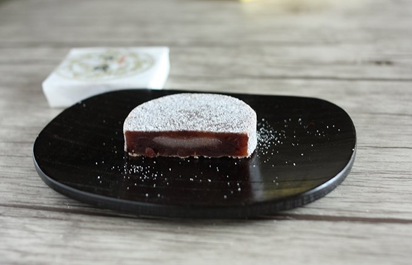

古鏡
古代の鏡\ancient mirror
古鏡介紹

「古鏡」是山形縣鶴岡市的著名伴手禮，古鏡的由來是因為，鶴岡附近出土過幾百面文物古鏡，其中有一百多面都獲批為重要文化遺產。「古鏡」這款點心就是模仿出土的古文物製作的。
它的外觀是，以在出羽三山之一的羽黑山發現的平安・鎌倉・江戶時代的鏡子為形象做成的。非常適合喜歡紅豆餡或是甜食的人。適合當作送給雙親或是鄰居的伴手禮！喜歡和菓子，或是喜歡日本茶的人也不能錯過！
古鏡是將甜味清爽的紅豆沙與綿密軟糯的麻糬相結合，配上茶飲一同食用，口感更佳。
推薦商店
木屋村
 位於水稻產區莊內鶴岡市郊的月山、羽黑山和湯殿山。這些在日本全國聞名的山脈被稱為出羽三山，建於大約 1500 年前的推古天皇統治時期。
其中，羽黑山作為羽黑葉山伏的據點而繁榮起來。在羽黑山山頂三神彩殿前的鏡池中發現了平安時代、鎌倉時代、江戶中期的數百面鏡子，其中190面被指定為重要文化財產。
木村屋將創業120多年來積累的“鏡”的精髓商品化，以出土的這面歷史鏡的形狀命名為“古鏡”。
位於水稻產區莊內鶴岡市郊的月山、羽黑山和湯殿山。這些在日本全國聞名的山脈被稱為出羽三山，建於大約 1500 年前的推古天皇統治時期。
其中，羽黑山作為羽黑葉山伏的據點而繁榮起來。在羽黑山山頂三神彩殿前的鏡池中發現了平安時代、鎌倉時代、江戶中期的數百面鏡子，其中190面被指定為重要文化財產。
木村屋將創業120多年來積累的“鏡”的精髓商品化，以出土的這面歷史鏡的形狀命名為“古鏡”。
木村屋總本店的商譽以來，已經有 130 多年的歷史了，
木村屋主要製作日本北部鶴岡的傳統點心。
我們將提供山形縣鶴岡市著名的甜點，作為紀念品。